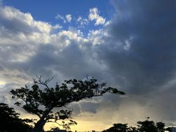
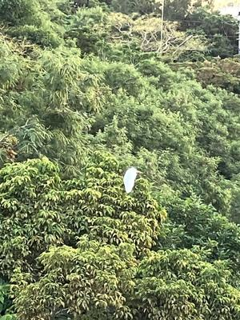
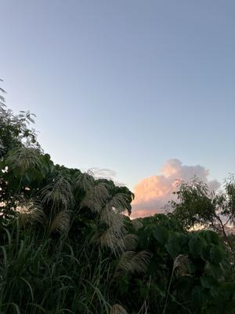

うるがいの話 ある日
最新: 天気予報大外れ【うるがいの話 ある日】とは 一日だけのプログです
『うるがいの話』の最新一日だけのプログで、通信料が少なく経済的だ。カニの画像をクリックすると全ての日付が載る『うるがいの話』サイトを表示します
|
|
【うるがいの話】 うるがい(ｳﾙｶﾞｲ urugai)とは、『もずくがに』の名前でとても大きくなります。 |
|---|---|
|
|
【カミマヤーの話】 猫のことを方言でマヤーといいます。カミマヤー（kamimayaa）とは、神の猫のことです。 |
|
【たながぁの音楽】 たながぁ（ﾀﾅｶﾞｰ tanagaa）とは手長えびのことで、何種類かあり大きいのは車 エビぐらいになります。 |

|
【ぶながぁの話】 ぶながぁ(ﾌﾞﾅｶﾞｰ bunagaa)とは、赤い髪の毛、赤い身体、そして身長は１ｍ２０ｃｍ ぐらい、川の蟹を食べているの目撃された。場所は沖縄県国頭郡大宜味村のと ある村僕の隣近所に住んでいる爺さんから、聞いた話です。 |
|
|
【ギーマの話】 ギーマ(giima)とは、山原の里山に咲くスズランに似た、 花を付けます。実は食べられます、 気が付くと口の周りが紫になっています。 |
2023年11月02日 (木）天気予報大外れ
15:44
 
今日は、晴れていい天気、洗濯日和と予報だったが、私のところでは明け方か
ら昼２時過ぎまでかなりの雨が降った。気温も下がっている。昨日ススキの穂
を見る、秋だべ。小学生の頃、いたずらでススキの穂を顔に付けると白い毛が
でてきてシラヘと言っていた。

ヨメがお隣さんの奥さんと長電話、この前商店街で歩いて転び、手首の骨にひ
びが入り、数日入院していたと。転んだ時、近くの人が救急車を呼んでくれた
と。この前、工事した隣の奥さんもピアノのふちに、手を置くのをミスって右
手を骨折した話があったことを思い出した気をつけよう。暗号通貨がかなり上
がっている、暗号資産の投資の詐欺で５千万騙されたと今日のニュースで言っ
ていたが・・・・。
１５時３８分 ビットコインの総資産 ￥１５、３９４（↑２８５）